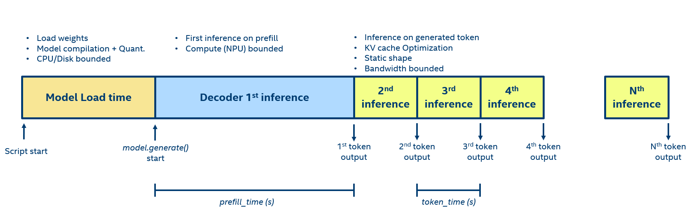

Decoding LLM performance#
Decoding and understanding the performance of large language models (LLMs) is critical for optimizing their efficiency and effectiveness. The inference process of an LLM can be broken down into three distinct phases, each with its unique characteristics and performance considerations, as shown in the following figure.

Load phase#
The load phase encompasses the initial steps of bringing an LLM into action, starting from loading the model into memory until the model.generate() call is initiated.
Phase Steps#
Weight Loads: load phase latency is largely dependent on how quickly the model weights can be loaded from the disk as part of model initialization.
Quantization: Quantization involves the process of reducing the precision of the weights, which can impact the performance. This step is designed to balance the trade-off between model accuracy and the computational efficiency of the model. Quantizing the weights involves analyzing the entire model to lower the precision of its parameters. Depending on its implementation, it can be an expensive process and might require fine-tuning the model for best performance.
Compilation: is the process of transforming the original model into a format that can be run on the NPU. It involves some model optimizations as well as lowering the operation into a NPU runtime format.
Implications#
CPU/Disk Bound: since this phase relies heavily on I/O operations and CPU activities, the underlying CPU and disk speed is what bounds performance.
Pre-compilation: quantizing and in a lesser extent compiling a model might result in a significative latency. It is suggested to prepare the model offline and not during the application if it is possible. An example of how this can be done is in the
export.pyscript in thescriptfolder. That do not removes the needs to load the weights from the disk at initialization stage but remove the compilation and quantization latency.
Prefill phase#
In the prefill phase, the model analyzes the user prompt to produce the initial output token. The primary metric used is prefill-time (a.k.a. first inference latency), which gauges the duration from the LLM’s initiation to the generation of the first token. This interval is commonly interpreted by users as the “LLM startup time” as it denotes the period from when they commence typing to when the LLM begins its response. A brief prefill-time enhances system responsiveness and user satisfaction.
Phase Steps#
Fist inference: model first inference on the user’s prompt. This process can be computationally intensive, particularly with long prompts, as it processing requires significant matrix-matrix multiplications.
Key-Value cache (KV-cache): the prompt key and value output from every attention layer can be cached for the next tokens generation in order to save computation.
Implications#
Compute bounded (NPU): the initial inference process is primarily limited by computational resources (NPU) due to the typically substantial size of the user’s prompt.
Input prompt size: The latency during this phase is contingent upon the length of the user’s prompt. A lengthier prompt results in a quadratic increase in runtime due to the LLM’s multi-head attention block.
Token Phase#
After the prefill, the LLM enters the token phase, where it generates the remaining tokens in the output sequence. The primary metrics used are token-time and tokens/s. They measure how quickly the
Phase Steps#
Inference: The generated token alongside the KV-cache is passed as input to the model. Because of KV-cache optimization, the required compute is fairly limited as effectively the LLM runs with a single new token as input.
Weight loads: while compute is limited, the model still needs to load the entire weight-set (potentially billions of parameters) to perform the computation. Therefore, execution is mostly limited by DRAM bandwidth rather than compute capability.
Implications#
DRAM Bandwidth: This stage of the inference is driven significantly by the bandwidth of the DRAM. The rate at which the LLM parameters are transferred from DRAM to the processing units has a considerable effect on the token time.
Performance Factors: Although NPU performance still matters, it becomes less of the bottleneck compared to the available DRAM bandwidth.
System/application parameters#
Beyond the phases, certain system parameters significantly influence the performance of LLMs.
Model Architecture and Size: The architecture and the size of the model dictate its performance. Larger models, which have more parameters, may provide more accurate results but are also more challenging to fit within the physical memory limits of a system.
DRAM size and speed: Once DRAM is filled, the performance can become bottlenecked. If the model and its KV-cache overflow the available DRAM, the system will need to swap memory to disk leading to a much slower inference.
Prompt Length: Different applications may require support for varying prompt lengths. Longer prompts translate into larger context sizes, increasing the demand on cache and tensor resources.
LLM Context Size: As the context size grows (large prompt and/or significative number of newly generated tokens) and hits the DRAM limit, performance may again become SWAP/SSD bounded due to insufficient DRAM to contain the larger KV-cache tensors.
Performance improvement#
Increasing the DRAM size/speed:
Model Quantization: quantization reduces model footprint and enables faster computations on supported hardware. This is expected to give performance benefits on all inference phases. It is important to notice that quantization by itself might reduce model quality and accuracy and so LLM performance should be the target of extensive investigation.
Static shape inference: many inference AI accelerators (Intel NPU, IPU, TPU, etc…) requires static shapes get maximum performance. Static shapes allows the NN graph compiler to improve memory management, schedule and overall network performance. For a example implementation, you can refer to the intel_npu_acceleration_library.nn.llm.generate_with_static_shape or transformers library StaticCache
Conclusions#
Understanding these phases and system parameters is crucial to diagnose performance bottlenecks, to fairly compare LLM performance over different accelerators and to develop strategies for optimizing the deployment and execution of LLMs on client and edge platform. By paying close attention to these aspects, one can ensure that the model operates efficiently, providing quick and accurate responses to user prompts.